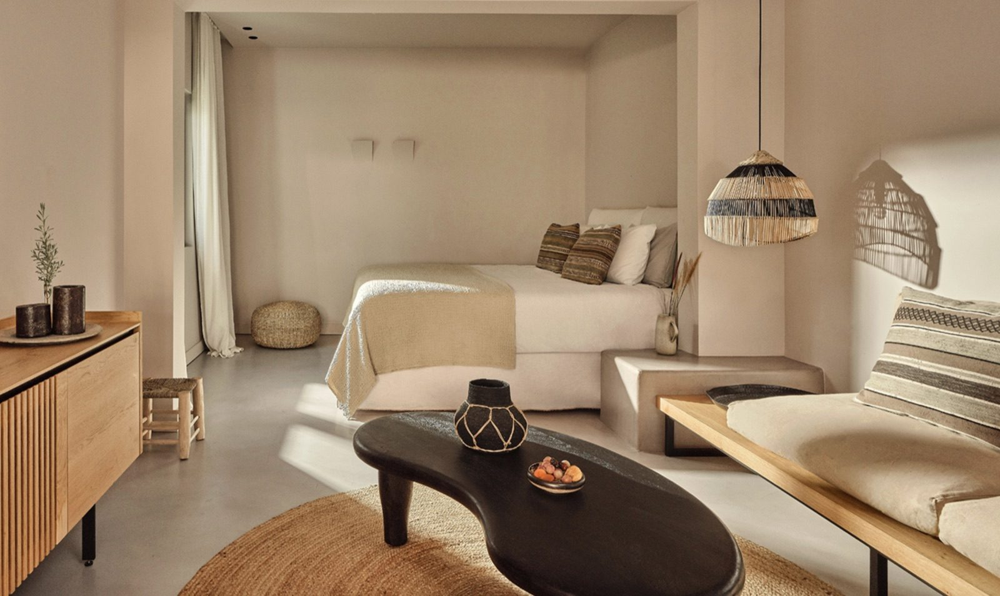

October 1
Depart Los Angeles
15:05Lufthansa LH 457 departs Los Angeles (LAX), Terminal B. Boeing 747-8, Business class. Overnight to Frankfurt.
Confirmation on your Lufthansa record
↑ All dates
Confirmation on your Lufthansa record

Mykonos · Paros · Santorini · Crete · Paris
October 1–17, 2026
Four islands, one private boat, two fast ferries, and a night in Paris on the way home. One year married, and this is how you mark it. Everything below runs in order, with confirmation numbers under each item.
How to read this page: all times are local to the place they happen and use the 24 hour clock, exactly as they will appear on your tickets. Anything marked Confirming is in hand on my side and will be filled in here as it lands. Tap any date below to jump straight to that day.
Four Seasons Hotel Mykonos, Superior Sea-View Room
4 nights · Oct 4–8Cosme, a Luxury Collection Resort
3 nights · Oct 8–11Andronis Boutique Hotel, Oia
5 nights · Oct 11–16Minos Beach Art Hotel, Agios Nikolaos
Depart Los Angeles

Two nights at Four Seasons Hotel Mykonos · Superior Sea-View Room
Frankfurt connection, arrive Mykonos

Mykonos · Scorpios at sunset

Four nights at Cosme, a Luxury Collection Resort · your own buggy for the island
Mykonos to Paros by private boat

Paros · your first anniversary
Paros, open day
Paros, open day

Three nights at Andronis Boutique Hotel, Oia · Executive Suite with Cave Plunge Pool
Paros to Santorini by ferry

Santorini · two tanks off Kamari
Santorini · wine and Omnia

Five nights at Minos Beach Art Hotel, Agios Nikolaos
Santorini to Crete by ferry
Crete, open day
Crete · farm to fork at Peskesi
Crete, open day
Crete · last full day in Greece
Crete to Paris
Paris to Los Angeles
The same legs as above, gathered in one place. Here is how you move from Los Angeles through the islands and home again: Lufthansa across the Atlantic, a private boat to Paros, two fast ferries, a car on Crete, and Paris on the way back.
Thu, Oct 1. Departs LAX Terminal B 15:05, lands Frankfurt Terminal 1 11:00 Friday. Boeing 747-8, Business class.
Fri, Oct 2. Greeter meets you on arrival and walks you through Terminal 1 to your Mykonos flight. 3 bags. Reference VIP-11357-FRA.
Fri, Oct 2. Operated by Discover Airlines, Airbus A320, Business class. Departs 13:20, lands 17:10.
Fri, Oct 2, 17:10 arrival. 2 guests, 3 bags. Driver meets you in arrivals with a sign. Confirmed and prepaid, part of the 250 euros covering all three Mykonos cars.
Sat, Oct 3. Out around 17:30 for your 18:00 table, back whenever you are ready; message the driver 30 minutes ahead. Confirmed and prepaid.
Sun, Oct 4, 11:30 from Ornos (pickup point). Aegean Breeze, a Rock 36. Confirmed, reference JMJAE0.
Sun, Oct 4, about 11:00, for the 11:30 boat. Confirmed and prepaid.
Sun, Oct 4, early afternoon.
ConfirmingDrop-off point and the hop to the hotel
800cc buggy for the length of your Paros stay, handed over at the hotel at 15:00 on Oct 4. One of you meets the rental company with a driving licence. 330 euros, paid at handover. Confirmed through the Cosme concierge.
Thu, Oct 8. Pickup 11:45 for the 13:25 ferry. Arranged through the hotel, 65 euros. Confirmed.
Thu, Oct 8. Departs 13:25, arrives 15:10. VIP Platinum seats. At the port by 12:25. Ferryhopper reference FH25EX3752NP.
Thu, Oct 8, 15:10. VIP Santorini, Mercedes SUV, meets you off the ferry and takes you to Andronis. Confirmed and paid. Booking VIP-S-90110C81. WhatsApp +30 697 900 6524.
Sun, Oct 11. VIP Santorini, Mercedes SUV, pickup at Andronis 14:15, at the port by 14:45. Confirmed and paid. Booking VIP-S-90110C81. WhatsApp +30 697 900 6524.
Sun, Oct 11. Departs 15:45, arrives 17:25.
ConfirmingBooking reference
Jeep Renegade, handed over at Heraklion port at 17:30 on Oct 11 by a Byron representative with a sign. Full insurance, unlimited mileage. 525 euros for five days including port delivery. Early return at Heraklion airport around 06:15 on the 16th. Confirmed.
Fri, Oct 16. Leave the hotel 05:45. Departs 08:15, lands 10:55. Airbus A320neo, Economy. Airline reference HU1N7G, via Chase Travel.
Fri, Oct 16 and Sat, Oct 17.
ConfirmingBoth directions
Sat, Oct 17. Departs 16:00, lands LAX 18:44. Delta Premium Select. Melissa in 21G. Ticket 0062464160694.
Ferries: arrive at the port one hour before departure. Seajets e-tickets can be downloaded between 48 and 2 hours before departure and are not accessible outside that window.
Nothing here needs anything from you unless noted. It is simply what I am still confirming on my side.
Greece is 10 hours ahead of Los Angeles. Paris is 9 hours ahead. Frankfurt and Paris are 1 hour behind Greece.
Appreciated but never expected in Greece. Comfortable ranges, always in euros, cash.
Happy first anniversary. Please reach out during your trip if anything comes up at all. I’ll be in Austin, eight hours behind you in Greece, and I’ll do my best to assist the moment something goes sideways.